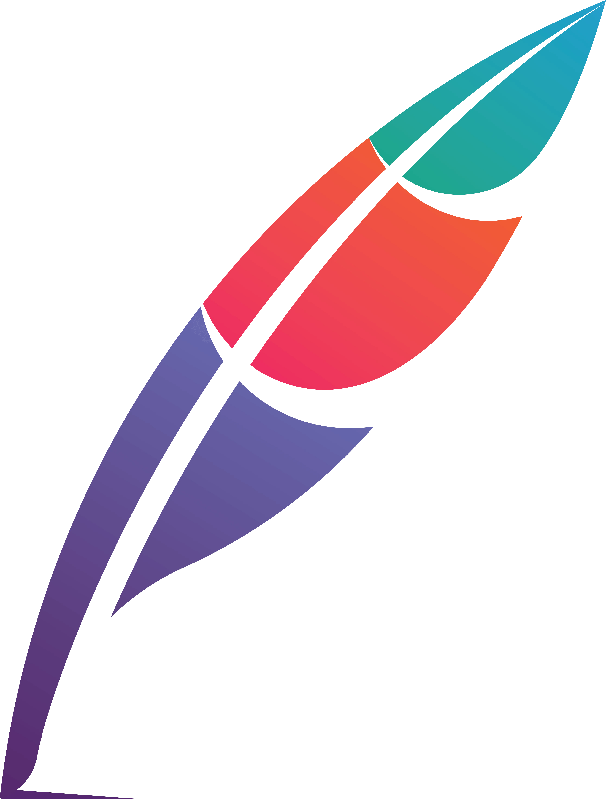

МолекулаАгрегаторы нейросетей
Молекула объединяет модели для текстов, изображений, видео и музыки. В одном аккаунте можно подобрать инструмент под этап работы, сохранить инструкции проекта и использовать готовые роли.
К задаче в МолекулеРаздел «Создание текстов»: варианты ИИ для этой задачи, описания возможностей и переходы к обзорам. Сравните несколько решений на одинаковом примере.
Подготовьте новый текст объявления из программы события и условий участия. Молекула помогает начать материал по теме и брифу; до распространения сверьте место, дату и контакт, а отсутствующие сведения оставьте на согласование с организатором.
Напиши объявление о встрече читательского клуба по моей программе. Нужны тема, порядок участия и контакт из исходника. Дату ещё не согласовали: отметь это, не назначая её самостоятельно.

Молекула объединяет модели для текстов, изображений, видео и музыки. В одном аккаунте можно подобрать инструмент под этап работы, сохранить инструкции проекта и использовать готовые роли.
К задаче в Молекуле«Adventure Stories» помогает развивать текст истории.
Для «Auto Seduction AI» сначала определите свою задачу и требуемый результат. Карточка относится к направлению «Создание текстов».
ChatOn объединяет разговорного ИИ-помощника и инструменты письменной работы в приложении. Среди операций есть создание изображения по тексту и проверка грамматики, а также синтез речи. Пользователь выбирает эти средства для общения и подготовки материалов, сочетая языковые задачи с визуальной и голосовой формой.
«Co-Writer (co-writer.ai)» готовит текстовый черновик по условиям задачи.
«Deeplom» представлен в разделе «Создание текстов». При выборе проверьте нужную операцию и условия работы с результатом.
Сравнивать «Elephas» с другими инструментами раздела «Создание текстов» удобнее на одинаковом исходном материале.
«Felix.app» готовит текстовый черновик по условиям задачи.
Goatchat объединяет разговорного ИИ-помощника с написанием текста и переводом. В приложении также доступны создание изображений и краткое изложение материалов. Автоматизация задач дополняет описанные возможности; продукт представлен в App Store и Google Play для работы пользователя на мобильном устройстве.
«INK» готовит визуальные материалы по заданию. «INK» также помогает с задачами поискового продвижения.
«PaperGen» готовит текстовый черновик по условиям задачи.
Riku помогает создавать письменные материалы с использованием ИИ. Пользователю предлагаются подсказки, наборы данных, инструменты письма и библиотека готовых решений. Поддержка сообщества дополняет рабочую среду, в которой можно выбирать подходящие средства для подготовки текста и опираться на доступные примеры решения задач.
«Secret Llama» готовит текстовый черновик по условиям задачи.
Для «SV Master by Startupvisors» сначала определите свою задачу и требуемый результат. Карточка относится к направлению «Создание контента».
Для «UGC Scripts» сначала определите свою задачу и требуемый результат. Карточка относится к направлению «Создание контента».
Для «Unbound AI» сначала определите свою задачу и требуемый результат. Карточка относится к направлению «Создание контента».
«Upgraide.me» готовит текстовый черновик по условиям задачи.
Для «AI Pickup Lines» сначала определите свою задачу и требуемый результат. Карточка относится к направлению «Создание текстов».
Сравнивать «Cluc.io» с другими инструментами раздела «Создание текстов» удобнее на одинаковом исходном материале.
«Essaybot» готовит текстовый черновик по условиям задачи. «Essaybot» также перерабатывает формулировки написанного текста.
Для «HeadlinesAI» сначала определите свою задачу и требуемый результат. Карточка относится к направлению «Создание контента».
Journalist AI создаёт статьи для бизнес-блогов по выбранной тематике. Доступные функции включают настройки, подключения к другим системам и работа с внешними ссылками. Инструмент предназначен для подготовки публикационного текста в определённой нише, связывая генерацию материала с настроенным рабочим процессом выпуска статей.
Сравнивать «Mi Cuento Digital» с другими инструментами раздела «Создание текстов» удобнее на одинаковом исходном материале.
«Microsoft Bing» готовит текстовый черновик по условиям задачи.
«Mochi Human Text» представлен в разделе «Создание текстов». При выборе проверьте нужную операцию и условия работы с результатом.
«neuroflash (neuroflash.com)» готовит текстовый черновик по условиям задачи.
«Opus by Anthropic» представлен в разделе «Чат-боты и ассистенты». При выборе проверьте нужную операцию и условия работы с результатом.

Runway объединяет генерацию видео, преобразование кадров и творческие рабочие процессы. Начинать удобнее с конкретного плана сцены и требований к сохранению объектов.
Rytr предлагает подготовку черновиков под заданный тип текста. Краткий бриф помогает получить материал, который затем можно редактировать под адресата.
Scene One помогает писать текст и организовывать проект из отдельных сцен. Упрощённый редактор дополнен ИИ-помощником и собственной вики для сведений о работе. Совместимость с разными устройствами позволяет продолжать проект в нескольких средах, сохраняя связь между написанием эпизода и организацией информации о нём.
Сравнивать «Second Brain» с другими инструментами раздела «ИИ-ассистент» удобнее на одинаковом исходном материале.
Сравнивать «SermonGPT» с другими инструментами раздела «Создание текстов» удобнее на одинаковом исходном материале.
Сравнивать «Simpler AI» с другими инструментами раздела «ИИ-ассистент» удобнее на одинаковом исходном материале.

Squibler относится к инструментам, которые помогают готовить текст по теме и требованиям к содержанию. Ещё одно направление работы: развивать сюжет и готовить авторский черновик.
StoryBooks создаёт персонализированные рассказы с помощью ИИ. Сервис поддерживает несколько языков и ориентирован в том числе на детское чтение. Пользователь получает историю, связанную с индивидуальным заданием, а выбор языка позволяет подготовить её для ребёнка, который читает на соответствующем родном языке.
«Storywise» готовит текстовый черновик по условиям задачи. «Storywise» работает с материалами для социальных площадок.
True Love Letter создаёт персональное любовное письмо с помощью ИИ. При подготовке учитываются отношения, воспоминания и эмоции пользователя, а содержание можно настраивать через форму. Сервис предназначен для составления личного послания, которое опирается на заданные человеком сведения о его чувствах и совместной истории.
«Typeframes» создаёт видеоматериал по заданию. «Typeframes» готовит текстовый черновик по условиям задачи.
«WebWave AI» помогает собрать сайт или веб-приложение.
Writer помогает организациям совместно готовить текстовый контент и поддерживать принятый стиль бренда. Команда может работать с терминологией и фрагментами текста, настраивать материалы под задачи отделов. В продукте также предусмотрены операции через API и средства управления командной работой.
Yes Ai Bot объединяет ИИ-модели для текста, изображений и видео в разговорном интерфейсе Telegram. Среди дополнительных операций есть замена лиц и локальное редактирование, а также увеличение изображения. API для разработчиков дополняет обращение к инструментам российского агрегатора в выбранном пользовательском сценарии.
«Your Own Story Book» представлен в разделе «Создание текстов». При выборе проверьте нужную операцию и условия работы с результатом.
Для «Порфирьевич» сначала определите свою задачу и требуемый результат. Карточка относится к направлению «Создание текстов».
«Ai Buster» связан с рабочими процессами WordPress.
«AI Lab» готовит текстовый черновик по условиям задачи.
Ai Sofiya помогает создавать текст рекламы для Facebook с участием ИИ. Инструмент также преобразует письменный материал в речь. Эти функции предназначены для маркетинга соцсетей, объединяя подготовку сообщения и его звуковой версии при работе пользователя над выбранным способом представления своего контента.
«AI-GPT (ai-gpt.ru)» помогает с задачами поискового продвижения. «AI-GPT (ai-gpt.ru)» готовит материалы для указанных письменных форматов.
amto AI помогает специалистам подготавливать юридические документы и исследовательские материалы. В продукте описаны автоматизация задач и сведения об изменениях законодательства, а также судебные прецеденты. Эти возможности дополняют создание письменного контента при работе пользователя с выбранным правовым вопросом.
Страница 1 из 6
Текстовая генерация полезна, когда известны читатель, задача и фактическая основа. Для статьи о ремонте помещения подготовьте описание реального проекта: условия, материалы и принятые решения. Не просите инструмент самостоятельно добавить историю клиента или результаты работ. Такие детали способны сделать текст живее, но превращают его в выдуманный пример.
Составьте перечень того, что человек должен понять после чтения. Например, почему выбран определённый материал и какие ограничения были у помещения. Попросите подготовить план, где каждый раздел отвечает на один вопрос. Если для раздела не хватает сведений, нужно получить вопрос к автору, а не абзац с общими советами.
В Claude можно обсуждать структуру и редактировать переданный материал. ChatGPT также позволяет готовить черновик по брифу и уточнять отдельные части. При сравнении дайте одинаковый список фактов и посмотрите, сколько неподтверждённых деталей появилось в каждом результате. Скорость получения длинного текста здесь второстепенна.
Вместо просьбы «улучши стиль» назовите конкретные правки. Уберите повторяющийся вывод, объясните термин обычными словами, сократите вводную часть и сохраните важное ограничение. После сокращения проверьте, не исчезла ли причина решения. Читателю нужна связь между условиями проекта и выбранным действием, а не только список достоинств.
Отдельно сверяйте цифры, имена и даты с исходным материалом. Помощник может соединить соседние сведения в новое утверждение, которого автор не давал. Для прямой цитаты сохраните оригинальную формулировку или явно оформите пересказ. Уникальность слов не заменяет достоверность содержания и не даёт оснований заявлять о проведённом исследовании.
Заголовок должен обещать то, что статья действительно объясняет. Проверьте подписи к изображениям и внутренние ссылки: они должны помогать продолжить тему. В конце оставьте конкретный следующий шаг, если он нужен читателю. Для поисковой справки полезен раздел поиска и анализа, а для настройки повторяемого задания можно изучить промты и промт-инжиниринг.